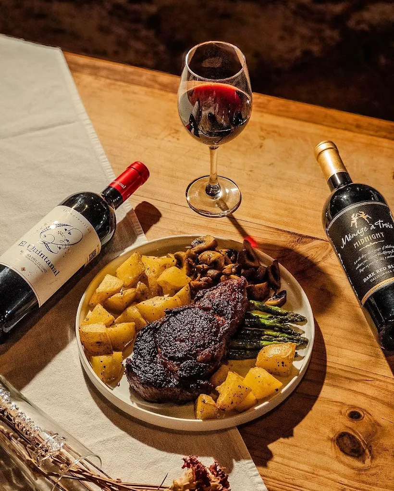
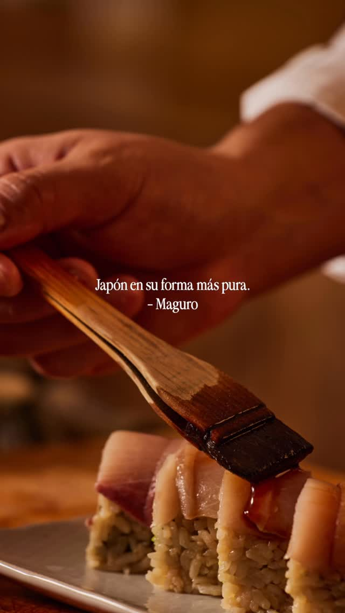
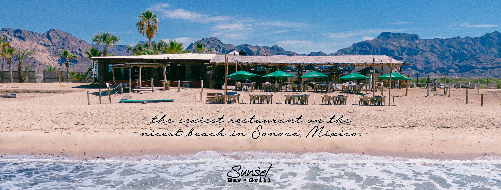
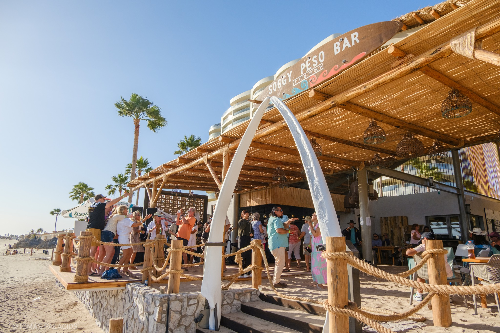
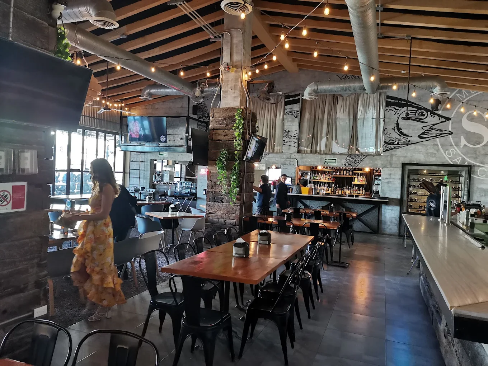

Ubicado a lo largo del Mar de Cortés, San Carlos, Sonora, ofrece más que solo vistas costeras impresionantes — es un lugar donde los mariscos, los sabores internacionales y la tradición local se encuentran. Ya sea que estés paseando por la marina, relajándote en una playa o explorando las calles locales, una aventura culinaria te espera.
5 Restaurantes Imperdibles en San Carlos

1. Restaurante Casa Manolo
Perfecto para: Cenas románticas, estilo mediterráneo, ambiente frente al mar y vistas hermosas
Ubicación: Marina San Carlos, arriba de Barracuda Bob's, junto al Yacht Club
Por qué destaca:
- Cocina estilo mediterráneo/europeo preparada con ingredientes locales
- Pastas de mariscos, cortes finos de carne de res, cordero y más
- Ambiente elegante pero relajado con vistas a la marina
- Para llevar y reservaciones disponibles
Consejos Pro para Visitantes:
- Llega a tiempo para el atardecer si es posible — la iluminación sobre la marina crea un ambiente hermoso
- Si visitas en fin de semana, asegúrate de hacer una reservación, especialmente si quieres mesa frente al mar
- Prueba su pasta de mariscos o un platillo de pescado a la parrilla — ambos reflejan lo mejor de la fusión local y mediterránea

2. Restaurante y Barra de Sushi Maguro (Maguro Barra)
Perfecto para: Amantes del sushi, platillos refinados de pescado, cenar en la Marina
Ubicación: Marina San Carlos, en el Muelle I junto a Marvida's
Por qué destaca:
- Concepto estilo japonés/Edomae con sushi, sashimi y nigiri
- Platillos creativos de mariscos destacando las capturas frescas
- Ambiente elegante pero casual — ideal para una cena más refinada sin ser demasiado formal
- Horarios que se adaptan tanto a comensales tempranos como tardíos
Consejos Pro para Visitantes:
- Pregunta por los especiales del chef u omakase si está disponible — estos a menudo destacan la mejor captura del día
- Acompaña tu sushi con un vino blanco fresco o sake
- Tómate tiempo para pasear por la marina después de cenar — las luces de la marina y los barcos son parte del encanto

3. Sunset Bar & Grill
Perfecto para: Comidas frente a la playa, cenas relajadas, ver el atardecer
Ubicación: Playa Algodones, KM 20 — justo en la arena
Por qué destaca:
- Mariscos frescos con estilo sonorense — capturas a la parrilla, hamburguesas, arrachera
- Justo en la playa con vistas increíbles del atardecer
- Tardes de música y entretenimiento complementan el ambiente playero
- Opciones creativas de menú junto con favoritos tradicionales
Consejos Pro para Visitantes:
- Apunta a la hora de la cena — como sugiere el nombre, las vistas del atardecer aquí son mágicas
- Llega un poco temprano en temporada alta para conseguir una buena mesa con vista a la playa
- No te saltes los aperitivos o mariscos a la parrilla — a menudo brillan más que los platos principales

4. Soggy Peso Bar
Perfecto para: Comida casual de playa, margaritas, ambiente relajado
Ubicación: Nueva ubicación frente a la playa junto a los condos Playa Blanca
Nota: Recientemente reabierto en marzo de 2025
Por qué destaca:
- Conserva el encanto original de bar playero relajado que locales y visitantes aman
- El menú incluye: tostadas de cangrejo, ceviche, quesadilla de camarón, pescado entero a la parrilla, fettuccine de mariscos, filet mignon de 10 oz
- Música en vivo los viernes, sábados y domingos
- Juegos divertidos de bar playero como lanzamiento de aros
Consejos Pro para Visitantes:
- Trae traje de baño — puedes comer con los pies en la arena o meterte al agua para nadar
- Ve a media tarde para una experiencia relajada antes de las multitudes de la cena
- Sé aventurero: prueba los ostiones a la parrilla, almejas o una de sus margaritas especiales

5. Mercado San Carlos
Perfecto para: Probar sabores locales, comida casual, explorar muchos vendedores
Ubicación: Blvd. Gabriel Estrada Lt1 en San Carlos
Horarios: Abierto largas horas desde temprano en la mañana hasta tarde en la noche
Por qué destaca:
- Estilo mercado de comida con múltiples vendedores y puestos
- Variedad de platillos — pasea, elige y prueba diferentes cocinas
- Ambiente vibrante y casual con auténtico sabor local
- Horarios flexibles — ideal para cualquier comida durante el día
Consejos Pro para Visitantes:
- Ven con hambre — hay mucho que explorar y tal vez quieras probar de múltiples puestos
- Pregunta por recomendaciones locales o qué está fresco en el momento — los vendedores a menudo saben mejor
- Es una excelente opción para un bocado rápido o una tarde relajada cuando no tienes ganas de comer formalmente
Itinerario Sugerido de Tour Gastronómico
Aquí hay una forma de ejemplo para incorporar estos restaurantes en un tour gastronómico de varios días en San Carlos:
| Día |
Comida |
Cena |
| Día 1 |
Mercado San Carlos (casual, variedad) |
Casa Manolo (romántico, elegante) |
| Día 2 |
Sunset Bar & Grill (comida en la playa) |
Maguro Barra (cena de sushi) |
| Día 3 |
Soggy Peso Bar (mediodía frente a la playa) |
Revisita el favorito o prueba taquerías locales |
Consejos Adicionales para Comer
Consejos Esenciales para Tu Tour Gastronómico en San Carlos:
- Ve con calma: Los mariscos son ricos y las porciones pueden ser generosas
- Pregunta por especiales del día o captura del día: Algunos restaurantes sirven platillos solo cuando están frescos
- Verifica horarios: Algunos lugares cierran más temprano o están cerrados ciertos días de semana (ej. Casa Manolo está cerrado los lunes)
- Llega temprano para vistas del atardecer: La luz costera es parte de la experiencia